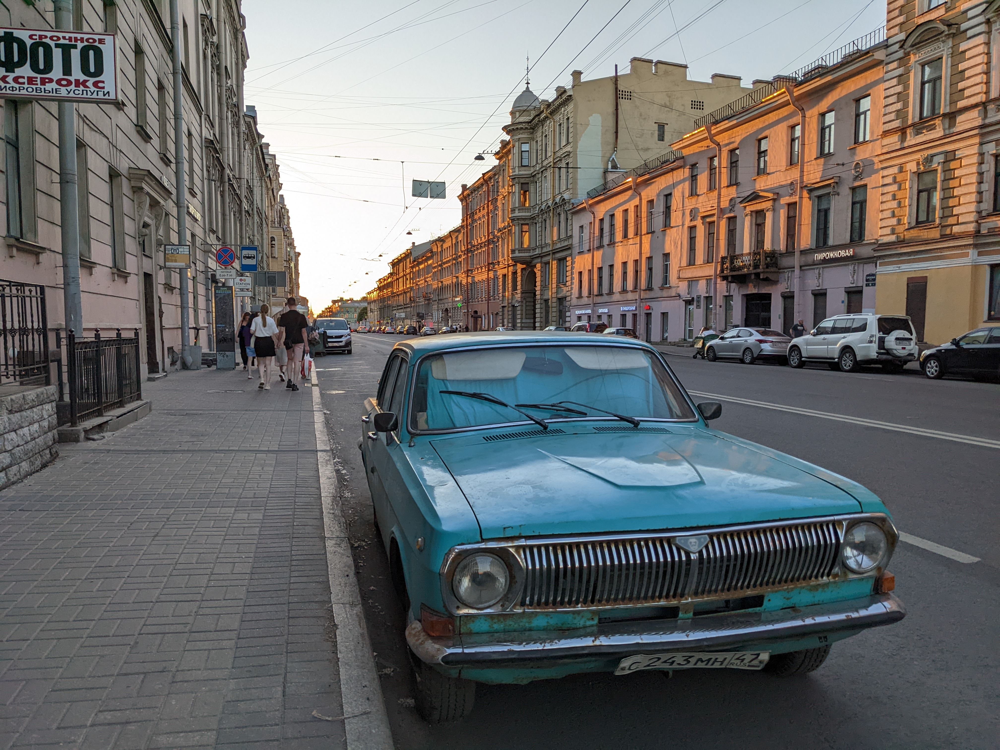
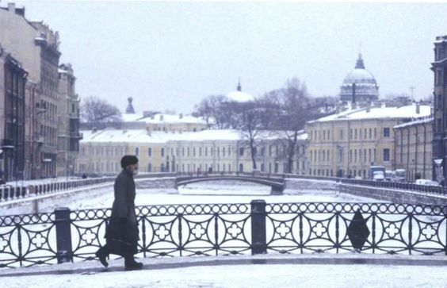

Saint Petersburg

I read Petersburg by Andrei Bely a while ago. The protagonist, in his typical foolish and depressed Russian manner, weaves throughout the streets of the city, sometimes adorning a red domino costume. This to me is forever Saint Petersburg now.
Notable stuff
- October: Ten Days That Shook the World (dir. Sergei Eisenstein)
- Naming history: St Petersburg, Petrograd, Leningrad, then St Petersburg again.
- Cool canals and bridges like in the picture.
- Dostoevsky's grave.
- Hermitage/Winter Palace: A museum out of a gorgeous green palace.
- White Nights: For a couple weeks in the summer, the sun remains visible at night at high latitudes, as the sun never fully dips below the horizon. Creates a surreal twilight effect. Scarlet Sails is celebrated at this time.
- Church of the Savior on Spilled Blood
- Nevsky Prospect
- Faberge Museum
- Mariinsky Theatre
